Luật FIDE đầy đủ, máy đấu tám mức, 3000 bài tập chiến thuật. Không tài khoản, không quảng cáo, không thu thập dữ liệu — mở lên là chơi.
Phiên bản 1.9.0 · 23 MB · Android 5.0 trở lên · chưa có trên Google Play nên phát hành bằng tệp APK.
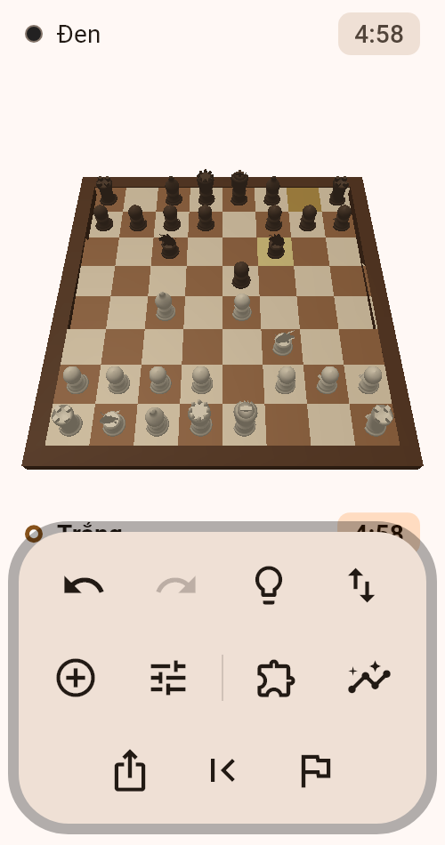
Không phải app cờ vua nào cũng có.
Các mức thấp không chỉ nghĩ ít hơn mà còn nhìn nhầm thế cờ — nên chơi với chúng giống chơi với người mới, chứ không phải với một cỗ máy bị bóp cổ. Đó là khác biệt bạn cảm nhận được ngay từ ván đầu.
Lấy từ kho mở của Lichess, chia đều sáu mức từ rất dễ tới rất khó. App theo dõi điểm của bạn và luôn đưa bài vừa sức — giải đúng thì bài khó dần lên.
Máy đấu, kho bài tập, phần chấm ván — tất cả chạy trên máy bạn. Không đăng nhập, không quảng cáo, không thu thập gì. Ván đang chơi tự lưu: thoát app rồi mở lên vẫn đúng chỗ cũ, kể cả đồng hồ.
App chỉ dùng mạng cho một việc duy nhất: mỗi ngày một lần hỏi xem đã có bản mới chưa. Tắt được trong Cài đặt.
Nhập thành, bắt tốt qua đường, phong cấp, chiếu hết, pat, luật 50 nước, lặp thế ba lần. Bộ sinh nước đi được đối chiếu với số liệu perft chuẩn của cộng đồng cờ vua.
Quân cờ dựng khối thật, có bóng đổ và ánh sáng. Vuốt ngang để xoay quanh bàn.
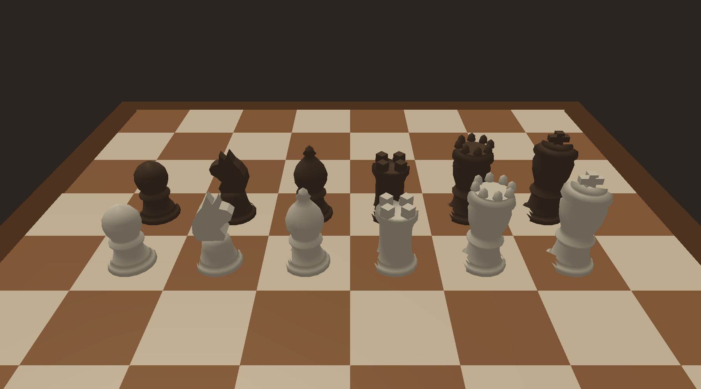
Cả cảnh — bàn, viền, ba mươi hai quân — gói vào một lệnh vẽ duy nhất với màu theo từng đỉnh. Nhờ vậy bóng đổ mượt mà máy vẫn nhẹ, và app không phình thêm một megabyte nào.
Kéo một quân trong không gian ba chiều buộc bạn ước lượng chiều sâu bằng mắt, rất dễ thả nhầm ô. Chạm chọn quân, rồi chạm ô đích.
Quân càng cao càng che ô phía sau nó. Với tỉ lệ bộ cờ thi đấu thật thì ở thế khai cuộc bạn không bấm nổi vào hàng tốt. Quân được thu lại đúng mức để tâm ô nào cũng còn lộ ra.
Bàn ba chiều bật sẵn, nhưng tắt được trong Cài đặt → Hiển thị. Bàn hai chiều vẫn đủ sáu bộ quân và bốn chủ đề màu như cũ.
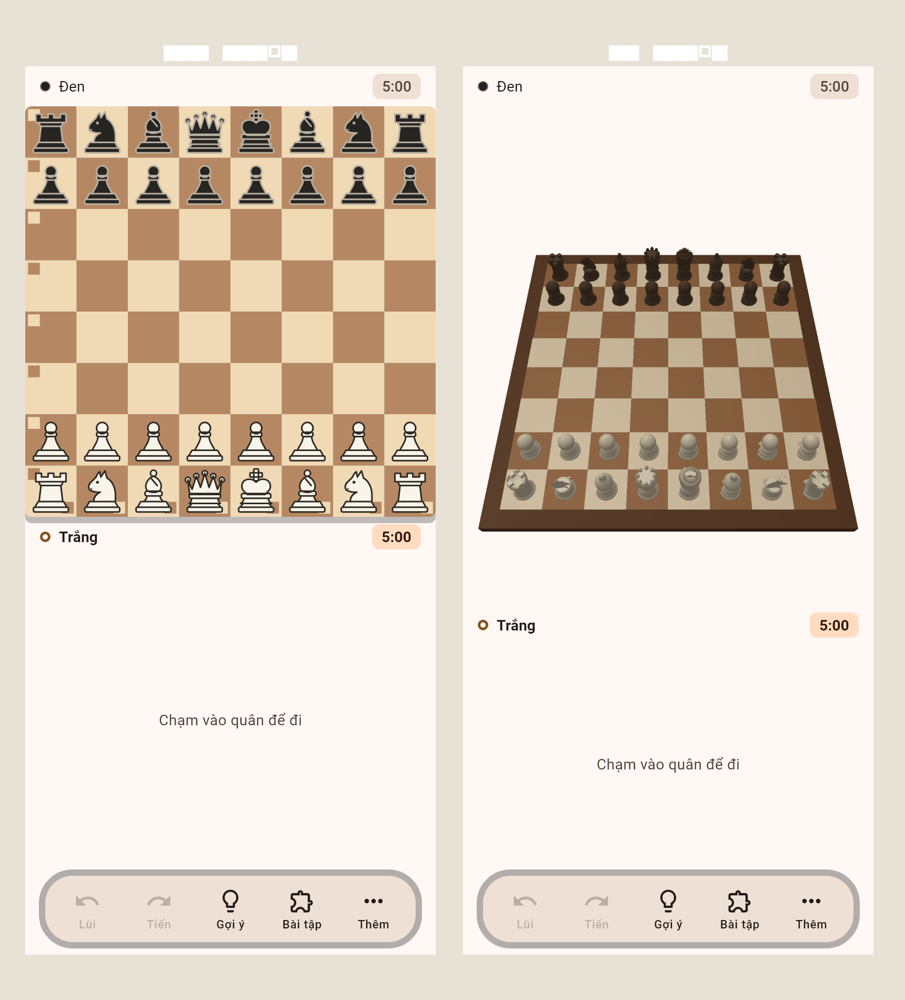
Bài nào cũng lấy từ ván đấu thật và có một lời giải rõ ràng.
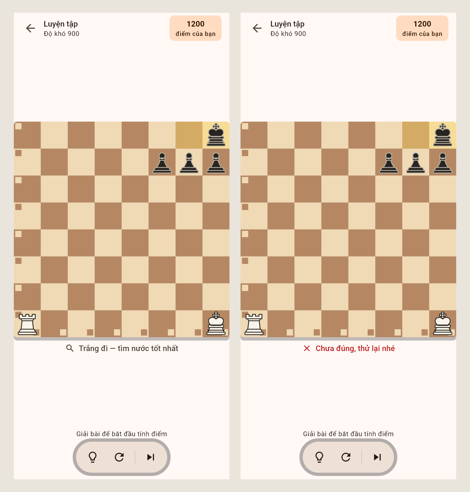
Bắt đầu ở 1200. Giải đúng ngay thì lên điểm nhiều hơn; phải nhờ gợi ý thì chỉ tính như hoà.
Đi sai thì báo sai và cho thử lại, không mất bài. Bí quá có nút gợi ý chỉ đúng nước.
Luyện tập theo sức mình, một bài chung cho cả ngày, hoặc đua thời gian ba phút với ba mạng.
Chấm xong một ván, những nước bạn đi hỏng thành bài tập riêng.
Ba nghìn bài tập có sẵn dạy chiến thuật chung. Bộ này dựng lại đúng thế cờ ngay trước nước bạn đi sai: bạn thấy đối thủ vừa đi gì, rồi phải tìm ra nước mình đã bỏ lỡ.
Giải được một lần không có nghĩa là đã thuộc. Bài đúng quay lại sau 1 ngày, rồi 3, 7, 21, 60. Giải sai thì hẹn lại ngay hôm nay.
Độ khó của bài loại này là con số ước lượng, không phải Elo đo từ hàng triệu lượt giải. Nên nó không làm thay đổi điểm bài tập — cho nó ảnh hưởng là làm hỏng thước đo.
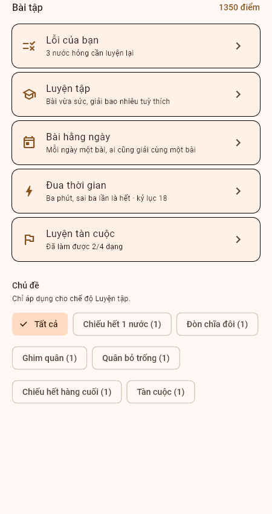
Hơn quân mà không biết chiếu hết thì vẫn hòa. Bốn kỹ thuật ai cũng phải biết.
Không phải một bộ đề cố định để học thuộc. Mỗi lần vào là một thế khác, nên bạn buộc phải hiểu cách làm chứ không nhớ chuỗi nước.
Máy giữ bên yếu và đi hết khả năng. Thắng được là do bạn biết cách, không phải do máy đi hớ.
Không có nút chỉ nước đi. Thay vào đó là nguyên tắc nằm ngay dưới bàn cờ: "Một Xe không đủ, phải có Vua đi cùng. Dựng hàng rào bằng Xe để giới hạn Vua đối phương, đưa Vua mình lên đối trụ, rồi đẩy hàng rào tiến thêm một hàng." Nhớ cách làm thì dùng lại được ở ván sau; nhớ một nước đi thì lần sau vẫn bí.
App ghi lại số nước ít nhất bạn từng thắng ở mỗi dạng. Thắng gọn dần mới là học được kỹ thuật.
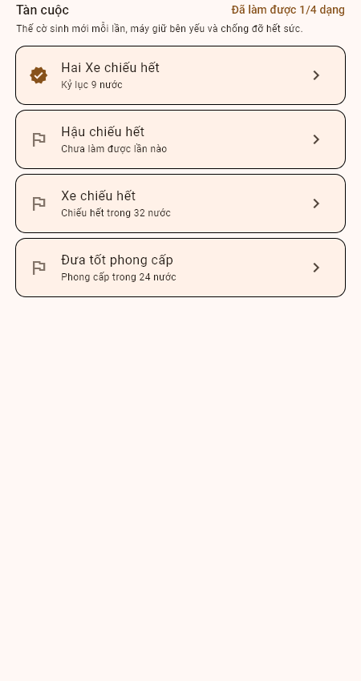
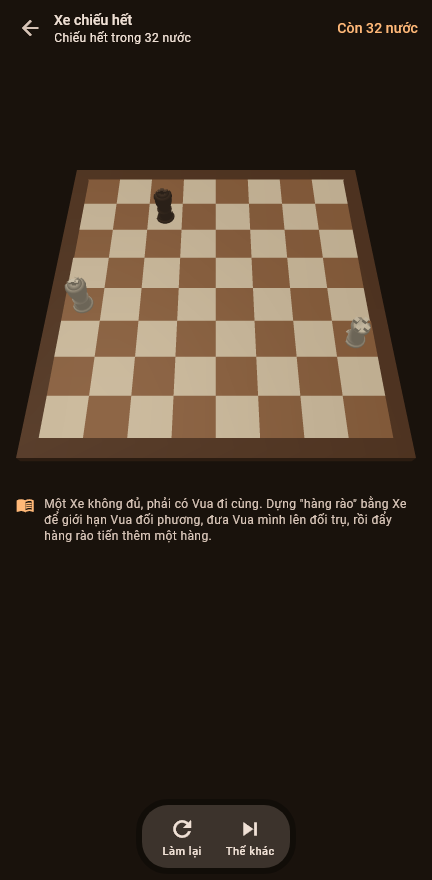
Máy chấm lại từng nước rồi chỉ thẳng nước hỏng nhất — không phải tự đoán.
Mỗi nước được gắn nhãn: tốt nhất, thiếu chính xác, sai lầm, hay sai lầm nghiêm trọng — kèm nước lẽ ra nên đi.
Nhìn một cái là thấy ván nghiêng về ai lúc nào. Chạm vào biểu đồ để nhảy thẳng tới nước đó.
Điểm độ chính xác cho từng bên, cộng dồn vào thành tích cá nhân qua từng ván.
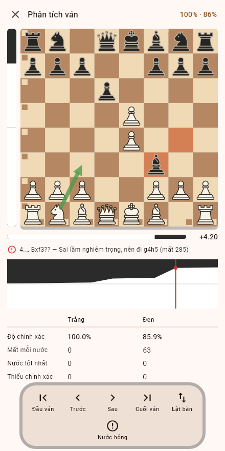
Đổi bất cứ lúc nào trong Cài đặt, hoặc để app đi theo ngôn ngữ của máy.
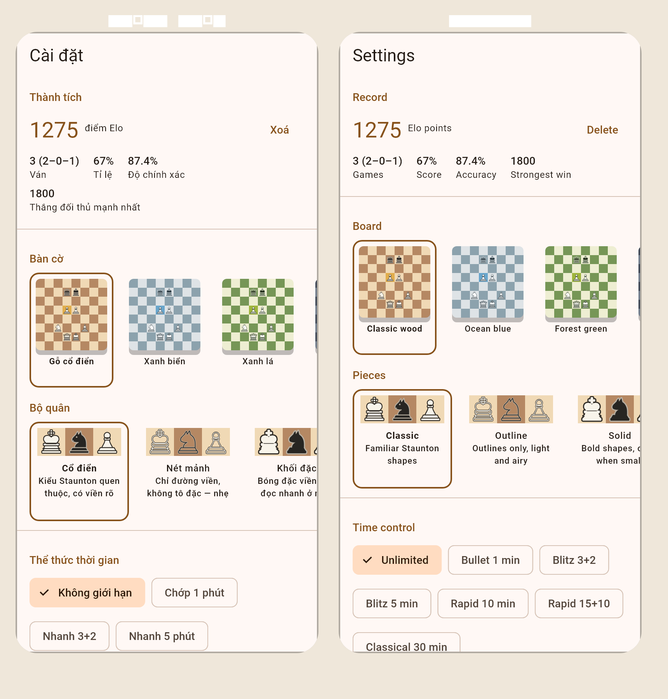
Bàn cờ có nhãn cho cả 64 ô, kể cả ô trống — thứ mà cách gắn nhãn theo quân bỏ sót hoàn toàn. Mỗi ô là một nút, bấm được bằng thao tác của TalkBack hoặc VoiceOver.
Cỡ vùng chạm, tương phản chữ và nhãn cho nút chỉ có biểu tượng — cả ba đều có test tự động canh, không phải kiểm bằng mắt rồi quên.
53 khai cuộc hay gặp — để gọi tên, để máy đi tử tế, và để luyện.
Đi e4 c5 là hiện Phòng thủ Sicilia. Đi tiếp tới nước năm thì thành Sicilia, biến Najdorf. Bạn không còn đẩy quân ngẫu nhiên — bạn đang chơi một khai cuộc có tên.
Không phải để nó mạnh hơn. Máy tính toán độ sâu hạn chế đi khai cuộc rất nhạt và lặp lại, ván nào cũng như ván nào. Có sách thì mỗi ván một khai cuộc khác, và đều là những khai cuộc thật.
Nước sách chỉ là nước sách, không phải nước duy nhất đúng. App nói "biến này không đi như vậy" rồi để bạn thử lại. Không mất gì cả.
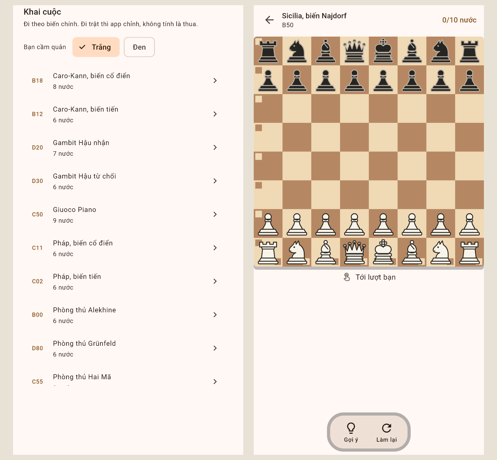
Người mới mất quân vì không nhìn thấy, chứ không phải vì tính sai.
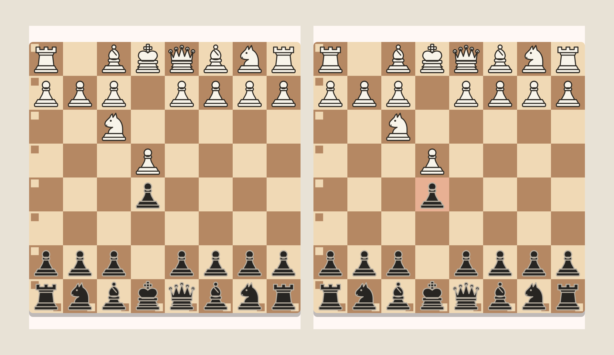
Chỉ kêu khi đối phương ăn được và lời hẳn. Quân được đỡ đủ thì im — đổi quân ngang giá không phải mất quân.
Nó là bánh phụ tập xe. Bật hay tắt lúc nào cũng được, kể cả giữa ván: Cài đặt → Hiển thị → Chế độ người mới.
Đây chính là thứ app dùng để giải thích nước hỏng sau khi đánh xong, chỉ khác là chạy trên thế cờ đang chơi. Nếu lời giải thích nói đúng thì cảnh báo cũng nói đúng.
Mọi ván chơi hết đều được lưu lại, và mở ra là chấm điểm được ngay.
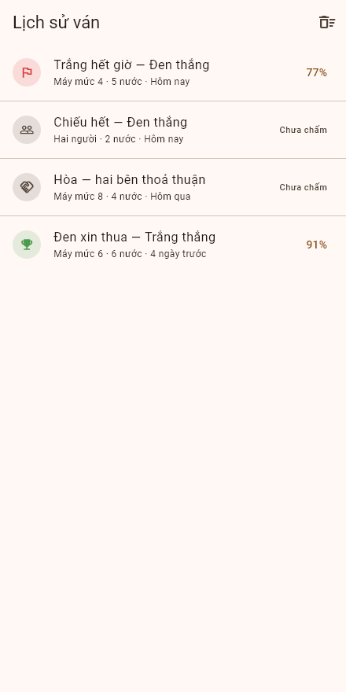
Xem lại một ván mà không biết mình sai ở đâu thì gần như vô ích, nên danh sách nối thẳng vào phần chấm điểm.
Độ chính xác được ghi lại ngay trong danh sách. Lần sau mở lên đã thấy con số, không phải chấm lại từ đầu.
Chỉ lưu nước đi chứ không lưu từng thế cờ, nên cả kho nhẹ hơn một tấm ảnh. Và vẫn nằm nguyên trên máy bạn.
Bốn chủ đề bàn cờ nhân sáu bộ quân, đổi được bất cứ lúc nào.
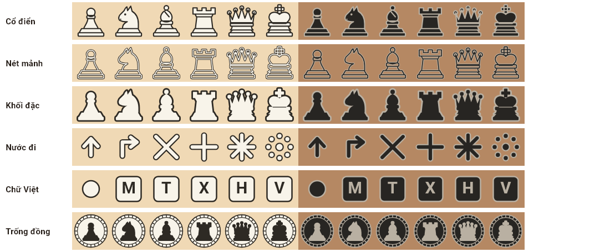
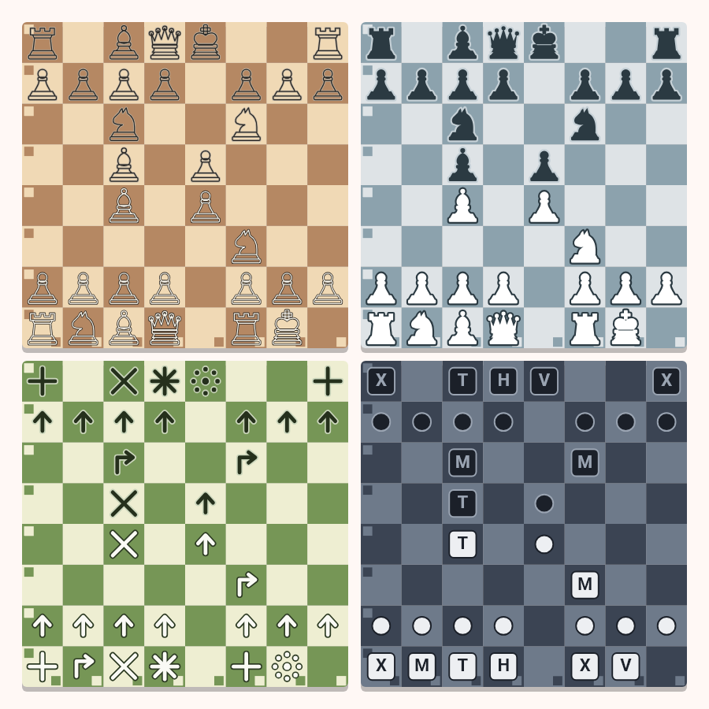
Cùng một mã nguồn chạy trên nhiều nền tảng, nhưng không phải nền tảng nào cũng làm được mọi thứ. Bảng dưới ghi đúng tình trạng hiện tại.
| Tính năng | Android | Windows | Trình duyệt |
|---|---|---|---|
| Chơi hai người chung một máy | Có | Có | Có |
| Đấu với máy, 8 mức | Có | Có | Có, mức cao yếu hơn |
| Máy nghĩ nền, không đơ giao diện | Có | Có | Không |
| 3000 bài tập chiến thuật | Có | Có | Có |
| Luyện tàn cuộc, 4 dạng | Có | Có | Có |
| Luyện khai cuộc, 53 khai cuộc | Có | Có | Có |
| Chế độ người mới | Có | Có | Có |
| Tự báo khi có bản mới | Có | Không | Không |
| Đồng hồ thi đấu, 7 thể thức | Có | Có | Có |
| Âm thanh và rung phản hồi | Có | Chỉ âm thanh | Chỉ âm thanh |
| Lưu ván đang chơi | Có | Có | Có |
| Xuất / nhập PGN, FEN | Có | Có | Có |
| Bản phát hành sẵn có | APK | Tự dựng | Tự dựng |
Vì sao trình duyệt yếu hơn: trình duyệt không chạy được luồng nền thật, nên máy đấu phải nghĩ ngay trên luồng giao diện. Thời gian nghĩ vì thế bị giới hạn ở 0,6 giây để màn hình không đứng yên quá lâu.
Chưa lên Google Play thì không ai lo việc cập nhật giúp, nên app tự lo.
Lúc mở app, nhiều nhất một lần mỗi ngày, app hỏi xem đã có phiên bản mới chưa. Có thì hiện bảng kèm phần "có gì mới"; không có thì không hiện gì cả.
Không có gì chạy ngầm sau lưng bạn. Bấm Tải về thì app tải, có thanh tiến độ và dừng được giữa chừng. Tải xong bấm Cài đặt thì Android mở màn hình cài đặt của nó — và vẫn hỏi bạn một lần nữa trước khi cài.
Ván đang chơi, lịch sử, cài đặt, điểm bài tập, thành tích, sổ tay lỗi — giữ nguyên hết.
Cài đặt → Cập nhật, tắt công tắc Tự kiểm tra khi mở app. Tắt rồi thì app không tạo kết nối mạng nào nữa.
Tới bản 1.5.0 app không xin quyền nào cả, và đó từng là một câu trên trang này. Từ 1.6.0 thì có hai, cả hai chỉ để làm đúng việc trên:
INTERNET — hỏi xem có bản mới và tải tệp về.
REQUEST_INSTALL_PACKAGES — mở màn hình cài đặt của Android với tệp vừa tải. Quyền này không cho phép app tự cài.
Nói thẳng: đây là đánh đổi. Muốn bỏ hẳn hai quyền đó thì chính sách riêng tư ghi rõ cách tắt, và bạn vẫn tải bản mới bằng tay từ trang này như trước.
Cài đặt và chơi ván đầu tiên trong khoảng hai phút.
Trên Windows: hiện chưa có bản đóng gói sẵn. Bạn cần cài
Flutter, tải mã
nguồn về rồi chạy flutter run -d windows.
Những thắc mắc hay gặp nhất.
Thí tốt là đòn quen thuộc trong cờ vua: cho đi một con tốt để đổi lấy thế trận. Tên vừa là thuật ngữ cờ vua, vừa nhắc rằng quân nhỏ nhất cũng có thể quyết định cả ván.
Gần như không. Máy đấu, kho bài tập và phần chấm ván đều chạy trên máy bạn, và app không gửi dữ liệu nào của bạn ra ngoài. Việc duy nhất cần mạng là hỏi xem đã có bản mới chưa, mỗi ngày một lần — tắt được trong Cài đặt → Cập nhật.
Vì app chưa phát hành qua Google Play. Android cảnh báo với mọi tệp APK cài ngoài cửa hàng, không phải riêng app này.
Không quyền nào. App không truy cập mạng, danh bạ, vị trí, máy ảnh hay bộ nhớ ngoài.
Mức cao nhất nghĩ bốn giây mỗi nước và tính trước khoảng 5–6 nước. Đủ sức cho người chơi phổ thông; kỳ thủ có trình độ sẽ thấy nó còn thua xa các engine chuyên dụng.
Đó là cố ý. Các mức thấp được thêm sai số vào cách đánh giá thế cờ, nên chúng nhìn nhầm giống người mới chơi. Nếu chỉ giảm thời gian nghĩ, máy sẽ vẫn hiểu thế cờ ở trình độ rất cao mà chỉ yếu về tính toán — đánh với nó không có cảm giác tự nhiên.
Từ kho bài tập mở của Lichess, phát hành theo giấy phép CC0. Mỗi bài là một thế cờ có thật từ ván đấu online, đã được hàng nghìn người giải và bình chọn.
Có, tự động. Thoát app giữa chừng rồi mở lại là chơi tiếp, kể cả thời gian còn lại trên đồng hồ. Bạn cũng có thể xuất ván ra PGN để mở bằng Lichess hay Chess.com.
Gửi thư tới mittohoa@gmail.com.
Phần này ngắn, vì thực sự không có gì để nói.
App không thu thập bất kỳ dữ liệu nào của bạn. Không tài khoản, không đăng nhập, không định danh thiết bị, không thống kê sử dụng, không quảng cáo, không thư viện theo dõi của bên thứ ba.
Cài đặt, ván cờ đang chơi và điểm bài tập được lưu trên chính máy bạn và bị xoá khi bạn gỡ app. Không có máy chủ nào nhận được gì cả, vì app không kết nối ra ngoài.
Bản đầy đủ: Chính sách quyền riêng tư · Thắc mắc: mittohoa@gmail.com.
App tự viết từ đầu, không dùng thư viện cờ vua nào.
Từ kho mở của Lichess, giấy phép CC0.
Quân cờ vẽ bằng vector dựa trên mẫu Staunton. Âm thanh tổng hợp bằng chương trình, không lấy từ nguồn ngoài.
Roboto, do Google phát hành theo giấy phép Apache 2.0.